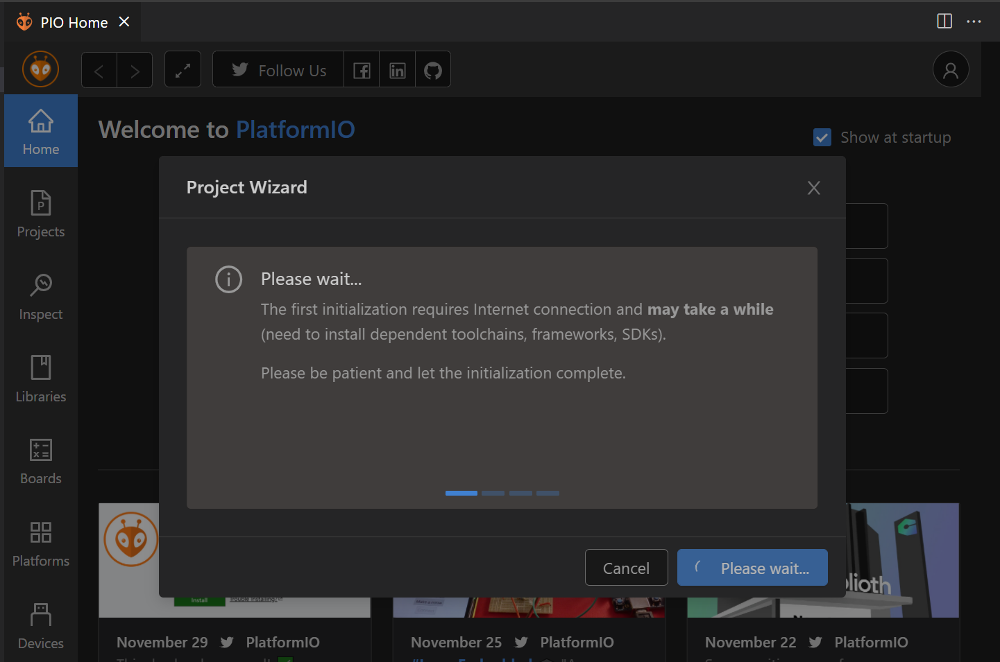
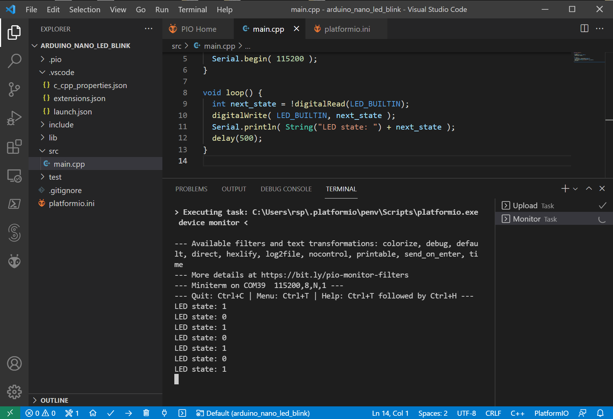

VS Code IDE + PlatformIO Extension for Arduino Programming#
Keywords: VS Code, PlatformIO, PIO, Arduino Programming
▷ ซอฟต์แวร์และการบริการของ PlatformIO#
PlatformIO (PIO) เป็นซอฟต์แวร์ประเภท Open Source และใช้ในการพัฒนาเฟิร์มแวร์ด้วยภาษา C/C++ สำหรับไมโครคอนโทรลเลอร์หลายแบบหลายตระกูล (โดยรวมแล้ว ในปัจจุบันมีบอร์ดมากกว่า 1000 รายการ ให้เลือกใช้งานได้)
บริษัทผู้พัฒนา PIO คือ PlatformIO Labs OÜ มีผู้ก่อตั้งและ CEO คือ Ivan Kravets หลังจากที่เขาได้เรียนจบปริญญาเอกทางด้านวิศวกรรมคอมพิวเตอร์ ก็ได้เปิดบริษัทและให้บริการซอฟต์แวร์ PlatformIO แบบใช้งานได้ฟรีมาตั้งแต่ปีค.ศ. 2014 เป็นต้นมา และมีทีมงาน R&D ของบริษัทอยู่ในประเทศยูเครน (Ukraine)
ซอฟต์แวร์และการบริการของ PIO อาจแบ่งได้ดังนี้
- PlatformIO Core & IDE: เป็น Open Source (Apache License)
เริ่มใช้งานมาตั้งแต่ปีค.ศ. 2014 มีการพัฒนาอย่างต่อเนื่อง
- PlatformIO Core (CLI): เป็นซอฟต์แวร์ที่เขียนด้วยภาษา Python ทั้งหมด และทำงานแบบ Command line (CLI): ประกอบด้วยกลุ่มคำสั่งต่าง ๆ เป็นโปรแกรมที่เขียนด้วย Python และถือว่าเป็นแกนกลางของ PlatformIO
- PlatformIO Home: ทำหน้าที่เป็น Web-based User Interface (UI) สำหรับผู้ใช้ เช่น การจัดการโปรเจกต์ การจัดการบอร์ดหรือแพลตฟอร์มที่เลือกใช้ การจัดการไลบรารี เป็นต้น และทำงานเป็นส่วนหนึ่งของ PlatformIO IDE
- PlatformIO IDE: เป็น Extension / Plugin สำหรับติดตั้งเพิ่มสำหรับ IDE ต่าง ๆ
ที่ได้รับความนิยมในปัจจุบัน มีทั้งแบบ Desktop IDE และ Cloud IDE เช่น
- Atom
- CLion
- CodeBlocks
- Eclipse
- NetBeans
- Qt Creator
- Sublime Text
- Visual Studio
- Cloud9
- Eclipse Che
- ตัวอย่างของ PIO Plugins เช่น
- "PlatformIO IDE for Atom" สำหรับ Atom IDE ซึ่งได้เริ่มพัฒนาและใช้งานมาตั้งแต่ปีค.ศ. 2016
- "PlatformIO IDE for VSCode" สำหรับ VS Code เริ่มมีการพัฒนาและใช้งานมาตั้งแต่ปีค.ศ. 2017 (First Release: 5/28/2017) และน่าจะเป็นตัวเลือกที่ได้รับความนิยมมากที่สุดในปัจจุบัน
- PlatformIO Plus:
- บริการนี้ไม่ฟรี แต่ทางบริษัทเปลี่ยนแผนธุรกิจใหม่ เพราะได้เงินทุนสนับสนุนเพิ่ม และทำให้ซอฟต์แวร์ในส่วนนี้กลายเป็น Open Source ในเดือนมิถุนายน ค.ศ. 2019
- องค์ประกอบซอฟต์แวร์และการบริการที่เกี่ยวข้อง คือ
- PIO Unified Debugger: ทำให้ผู้ใช้สามารถตรวจสอบการทำงานของโค้ดโดยใช้บอร์ดทดลองหรือฮาร์ดแวร์จริงได้ (In-circuit debugging)
- PIO Unit Testing Engine: เกี่ยวข้องกับขั้นตอนในการทดสอบซอฟต์แวร์
- PIO Remote: เป็นส่วนหนึ่งของ PlatformIO Remote Development Solution ที่เปิดให้บริการมาตั้งแค่ปีค.ศ. 2016 (แต่ในช่วงเวลานั้นจนถึงปีค.ศ. 2019 ยังไม่ฟรี ต้องสมัครสมาชิกและมีค่าใช้จ่าย) ทำให้ผู้ใช้สามารถเข้าถึงบอร์ดทดลองหรือฮาร์ดแวร์ที่อยู่ไกลออกไป ใช้งานผ่านระบบเครือข่ายหรืออินเทอร์เน็ตได้ โดยติดตั้งใช้งานซอฟต์แวร์ที่เรียกว่า PIO Remote Agent และเชื่อมต่อไปยัง PIO Broker ในระบบ PlatformIO Cloud ผู้ใช้สามารถแชร์ทรัพยากรฮาร์ดแวร์ระหว่างทีมพัฒนาได้ และใช้งานผ่าน Cloud IDE เช่น Cloud9 ได้ฟรี
- Commercial subscriptions: PlatformIO Premium:
- บริการส่วนนี้ มีค่าใช้จ่าย เหมาะสำหรับบุคคลหรือบริษัทที่ต้องการ Support จากทางบริษัท
▷ จุดเด่นของ PlatformIO#
ข้อดีของการใช้งาน PlatformIO ได้แก่
- ทำหน้าที่เป็น "Multi-platform Build System" เพื่อใช้ในการสร้างโปรเจกต์และคอมไพล์โค้ดสำหรับบอร์ดไมโครคอนโทรลเลอร์
- สามารถทำงานร่วมกับ IDE ได้หลายตัวเลือก โดยจะต้องติดตั้ง Plugin / Extension ที่เกี่ยวข้องเพิ่ม
- มี Software Frameworks หลายแบบให้เลือกใช้งาน เช่น ผู้ใช้สามารถเขียนโค้ดด้วย Arduino framework ได้
- มีการติดตั้งซอฟต์แวร์และโปรแกรมต่าง ๆ ที่เกี่ยวข้องกับบอร์ดไมโครคอนโทรลเลอร์ที่เลือกใช้งานได้โดยอัตโนมัติ เช่น Toolchains
- รองรับการดีบักโค้ดในฮาร์ดแวร์ (In-Circuit Debugger) และรองรับอุปกรณ์ประเภท Debug Probe ได้หลายแบบ เช่น CMSIS-DAP / DAPLink, ST-Link/V2, SEGGER J-Link, Black Magic Probe, Atmel-ICE เป็นต้น โดยใช้งานซอฟต์แวร์ OpenOCD / PyOCD เป็นตัวกลางเพื่อเชื่อมต่อกับฮาร์ดวแร์ดังกล่าว
- ใช้งานแบบรีโมทและในระบบ Cloud ได้
- สามารถกำหนดค่าต่าง ๆ ในการใช้งานสำหรับโปรเจกต์ได้ในไฟล์
platformio.ini(Project Configuration File)
หากเลือกใช้ไมโครคอนโทรลเลอร์ตระกูล STM32 ก็มีตัวเลือกดังนี้สำหรับเขียนโค้ดดังนี้
- Low-level (Drivers, Libraries)
- High-level (Framworks / Software Development Kits (SDKs)
- Arduino (based on STM32Duino)
- Arm Mbed OS
- Zephyr RTOS
▷ การติดตั้งและใช้งาน PlatformIO สำหรับ VS Code#
ถ้าเคยใช้ Microsoft VS Code เป็น IDE มาบ้างแล้ว ก็สามารถติดตั้ง PIO Extension เพิ่มได้ไม่ยาก แต่ถ้าไม่เคยติดตั้งใช้งาน VS Code ก็ให้เปิดเบราว์เซอร์ไปที่ URL ต่อไปนี้ แล้วเลือกดาวน์โหลดไฟล์สำหรับการติดตั้งใช้งาน
เมื่อได้ติดตั้งและเปิดใช้งาน VS Code ได้แล้ว ให้ไปที่ Tab Extension
สำหรับ VSCode Extension Manager
ซึ่งอยู่ทางซ้ายมือ แล้วพิมพ์ค้นหา Extension
โดยระบุชื่อเป็น "PlatformIO IDE" เมื่อพบรายการตัวเลือกดังกล่าว
ก็ให้กดปุ่ม Install เพื่อทำขั้นตอนติดตั้ง
รูป: PlatformIO IDE for VS Code
รูป: ค้นหา Extension ที่ต้องการติดตั้งเพิ่มใน VS Code
รูป: ทำขั้นตอนติดตั้ง PIO Extension
รูป: เมื่อได้ติดตั้ง PIO Extension แล้ว ให้เปิดใช้งาน PIO Home โดยคลิกสัญลักษณ์ของ PIO ที่อยู่ในแถบแนวตั้งทางซ้ายมือ
ในหน้าต่าง PIO Home จะเห็นว่า ในส่วนที่เรียกว่า Quick Access ผู้ใช้สามารถสร้างโปรเจกต์ใหม่ (+ New Project) หรือนำเข้าโปรเจกต์ของ Arduino Sketch (Import Arduino Project) หรือเปิดใช้งานโปรเจกต์ที่ได้เคยสร้างไว้แล้ว (Open Project)
รูป: การสร้างโปรเจกต์ใหม่ ในหน้าต่างของ Project Wizard
▷ ตัวอย่างการสร้างโปรเจกต์สำหรับ Arduino#
ถัดไปเป็นการสาธิตขั้นตอนการสร้างโปรเจกต์ใหม่ โดยเลือกใช้บอร์ด Arduino เช่น Arduino Nano (328P) และลองเขียนโค้ดตัวอย่าง ทำขั้นตอน Build และ Upload ไปยังอุปกรณ์ฮาร์ดแวร์จริง
ขั้นตอนตามลำดับมีดังนี้
- สร้างโปรเจกต์ใหม่ โดยใช้ Projecty Wizard ตั้งชื่อโปรเจกต์ เลือกบอร์ดที่จะใช้งาน และเลือกรูปแบบการเขียนโค้ด (Frawework) ในกรณีตัวอย่างนี้คือ เลือก Arduino Framework
- เมื่อกดปุ่ม Finish จะมีการดาวน์โหลดและติดตั้งโปรแกรมหรือไฟล์ต่าง ๆ ที่เกี่ยวข้องกับการเขียนโค้ดด้วย Arduino มายังเครื่องของผู้ใช้โดยอัตโนมัติ เช่น avr-gcc toolchain
- เปิดไฟล์
main.cppเพื่อเขียนโค้ด หรือเพิ่มไฟล์สำหรับ Source Code ในโปรเจกต์ใหม่ - แก้ไขการตั้งค่าใช้งานสำหรับโปรเจกต์ใหม่ในไฟล์
platformio.iniเช่น การตั้งค่า Baudrate สำหรับ Arduino Serial Monitor เป็นต้น - ทำขั้นตอน PlatformIO: Build เพื่อคอมไพล์โค้ด
- เชื่อมต่อบอร์ด Arduino กับคอมพิวเตอร์ผู้ใช้ และทำขั้นตอน PlatformIO: Upload ไปยังบอร์ด
รูป: เริ่มขั้นตอนสร้างโปรเจกต์ใหม่ โดยใช้ Project Wizard
รูป: ตั้งชื่อโปรเจต์ เลือก Arduino Nano ATmega328 (New Bootloader) เป็นตัวอย่างสำหรับ Platform แล้วเลือก Arduino สำหรับ Framework

รูป: เมื่อกดปุ่ม Finish ให้รอการติดตั้งซอฟต์แวร์เพิ่มสำหรับ Arduino Framework จนแล้วเสร็จ
รูป: เปิดดูการตั้งค่าต่าง ๆ ของโปรเจกต์ภายในไฟล์ platformio.ini

รูป: เปิดไฟล์ main.cpp และเขียนโค้ด Arduino Sketch
รูป: แก้ไขไฟล์ platformio.ini เพื่อกำหนดค่า Serial Baudrate ให้เป็น 115200
รูป: ตัวอย่างโค้ด Arduino Sketch (ไฟล์ main.cpp)
รูป: การทำขั้นตอน PlatformIO: Build (กดปุ่มสัญลักษณ์เครื่องหมาย ✓ ตรงแถบด้านล่างของ VS Code) และตัวอย่างข้อความเอาต์พุตใน Terminal
รูป: การทำขั้นตอน PlatformIO: Upload (กดปุ่มสัญลักษณ์เครื่องหมาย → ตรงแถบด้านล่างของ VS Code) และตัวอย่างข้อความเอาต์พุตใน Terminal

รูป: ตัวอย่างข้อความเอาต์พุตใน Terminal เพื่อเปิดใช้งาน Device Monitor
รับข้อความจากบอร์ด Arduino Nano ผ่านทางพอร์ต Serial
▷ ตัวอย่างการติดตั้งไลบรารีสำหรับ Arduino#
รายการไลบรารีที่สามารถเลือกใช้ได้ใน PIO มีมากกว่า 10,000 รายการ ดูได้จาก PlatformIO: Library Registry
ถัดไปเป็นตัวอย่างการใช้งานไลบรารีสำหรับ Arduino สาธิตการนำเข้าไลบรารี
FastLED และนำมาใช้ในการเขียนโค้ด
เพื่อกำหนดสถานะการทำงานของ WS2812B RGB LEDs (NeoPixels)
ซึ่งมีจำนวน 8 พิกเซล (มี WS2812B จำนวน 8 ดวง)
รูป: การค้นหา "Libraries" ที่ต้องการใช้งานสำหรับโปรเจกต์
รูป: ผลการค้นหา FastLED
รูป: ตัวอย่างการกำหนดค่าใน platformio.ini สำหรับใช้งานไลบรารี FastLED
รูป: กำหนดค่าในส่วนที่เรียกว่า Library Dependencies (lib_deps)
และระบุเวอร์ชันที่จะใช้งาน (เช่น ^3.4.0)
ข้อสังเกต: รูปแบบการกำหนดเวอร์ชัน (Release / Version)
ของไลบรารีที่ใช้กับ PIO เรียกว่า version Numbering Scheme หรือ
Semantic Versioning (semver)
แบ่งเป็นสามส่วนด้วยจุด (dot) คือ <major>.<minor>.<patch> ตามลำดับ
major: เมื่อมีการเปลี่ยนแปลง API ที่ทำให้โค้ดเดิมอาจใช้เวอร์ชันใหม่นี้ไม่ได้ (Changes that break backward compatibility)minor: เมื่อมีการเพิ่มฟังก์ชันในไลบรารีหรือ API แต่ยังใช้ API ได้เหมือนเดิม (Backward compatible new features)patch: เมื่อมีการแก้ไขบัก (Bug) และยังใช้ API ได้เหมือนเดิม (Backward compatible bug fixes)
นอกจากนั้นยังสามารถใช้สัญลักษณ์เริ่มต้น (Prefix Characters) เช่น
- caret (
^): new functionality in a backwards compatible manner and patches are allowed - tilde (
~): any version with the same major and minor versions, and an equal or greater patch version
ถ้าเขียนว่า ~3.4.0 ก็หมายถึง เวอร์ชันที่ต้องมี Major และ Minor version เดียวกันกับที่ระบุไว้ (3.4.x)
และมี Patch version เหมือนกันหรือสูงกว่าได้
แต่ถ้าเขียนว่า ^3.4.0 ก็หมายถึง เวอร์ชันที่ต้องมี Major version เดียวกัน แต่ Minor version และ Patch version เหมือนกันหรือสูงกว่าได้
ตัวอย่างโค้ดสาธิตการใช้งานไลบรารี FastLED ในเบื้องต้น
(กำหนดสีของ LED ให้เป็นสีแดงทุกดวงแต่ปรับระดับความสว่างตามที่กำหนดไว้ในอาร์เรย์ตามลำดับ)
#include <Arduino.h>
#include <FastLED.h> // include the FastLED library
#define LED_PIN 5 // select D5 pin for WS2812 LED strip
#define NUM_LEDS 8 // 8 pixels
#define COLOR_ORDER GRB
#define CHIPSET WS2812B
CRGB leds[NUM_LEDS];
void setup() {
FastLED.addLeds<CHIPSET, LED_PIN, COLOR_ORDER>(leds, NUM_LEDS);
for ( int i=0; i < NUM_LEDS; i++ ) {
leds[i] = CRGB::Red; // set color to red
}
}
// brightness levels
uint8_t BRIGHTNESS_LEVELS[] = {0,16,64,128,255};
int level = 0;
void loop() {
level = (level+1) % sizeof(BRIGHTNESS_LEVELS)/sizeof(uint8_t);
FastLED.setBrightness( BRIGHTNESS_LEVELS[level] );
FastLED.show(); // display this frame
delay(200);
}
ตัวอย่างไฟล์ platformio.ini
[env:nanoatmega328new]
platform = atmelavr
board = nanoatmega328new
framework = arduino
monitor_speed = 115200
lib_deps =
fastled/FastLED @ ^3.4.0
รูป: การทำขั้นตอน PlatformIP: Build ได้สำเร็จโดยปราศจากข้อผิดพลาด
รูป: บอร์ด Arduino Nano และโมดูล WS2812B RGB LED Bar
▷ กล่าวสรุป#
การใช้งานซอฟต์แวร์ PlatformIO (PIO) ร่วมกับ VS Code เป็นอีกตัวเลือกหนึ่งที่น่าสนใจสำหรับผู้ที่ต้องการเขียนโค้ด Arduino Sketch เพื่อนำไปใช้กับบอร์ดไมโครคอนโทรลเลอร์ Arduino ตามที่ได้นำเสนอเป็นตัวอย่างในบทความนี้ (แต่การใช้งาน PIO ก็ไม่ได้จำกัดอยู่เฉพาะบอร์ด Arduino เท่านั้น)
This work is licensed under a Creative Commons Attribution-ShareAlike 4.0 International License.
Created: 2021-12-23 | Last Updated: 2021-12-26